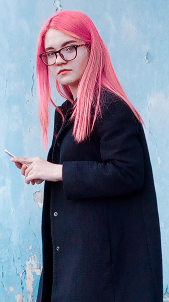
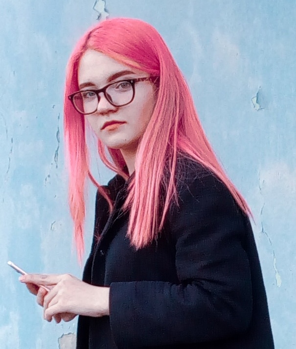

My name is Victoria. I am 22 years old, I live in Kharkov, received a bachelor's degree in psychology. I am a visual. I want to broadcast my vision of the world, of certain things, through my activities. I have been looking for a tool that would help me express myself for a long time, and I think I found it. Before that, I was engaged in photography, video filming and editing, I wanted to expand my interests and try something new.
Therefore, I can single out one of the personal qualities of constant development and knowledge, as well as responsibility, honesty, kindness, positivity.
Of the negative qualities - frustration from boring work, I will postpone it until the last moment,
but I will do it anyway. I also noticed that I need to switch from one long-term task
or activity to others in order to prevent burnout. In general, I am very cool and
motivated to do my job as best I can :)
As you can understand, I am a designer. For my site I made a logo,
design, layout and frontend. This site is the beginning of my
journey and the first site in my portfolio, which I made with love,
and learned a lot of new information for further work.
I enjoy taking pictures, playing guitar, editing videos and reading books. I
like to travel and take inspiration, which, in addition to the technical
background, is very important in my work.